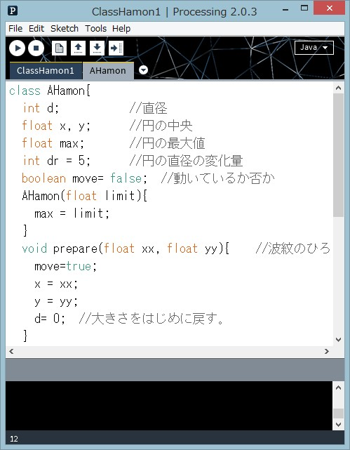

クラスを作る
プログラムの世界では、クラスはプログラム部品で、状態(変数)や働き(メソッド)を定義した「設計図」です。「鋳型」ともいえるクラスから実際の仕事をするオブジェクトを作ります。ここでは自分のプログラムに適した独自のクラスを定義し、それを使う方法を説明します。クラスの定義
プログラムの部品として働くクラスを作ることで、プログラムを効率的に記述できます。独自の新しいクラスを作る場合、そのクラスの機能を考え、その実現に必要な変数やメソッドを決定します。(1) クラスの機能を考える。
(2) クラスの名前を決める。変数と同じルールでつけるが、クラスの名前の先頭は大文字にする。クラスの機能を体現するような名前をつけるのがいい。
【名前の付け方】英数字，アンダースコア(_)からなる文字列で，名前の先頭は数字以外の文字にします。名前の長さは任意です。ただし、Javaやprocessingがキーワードとして使う文字列(予約語)は使えません。
(3) データを保存するための変数を宣言する(データの型と名前を決める)。(4) 機能を果たすためのメソッドを考える。メソッドの名前、戻り値の型、必要な引数を決め、処理を書く。
(5) オブジェクトを作る時にあらかじめしておきたい処理があれば、コンストラクタを定義する。
クラス定義には、キーワードclassを使います。classに続いてクラス名を書き、その後ろのブロック(｛と｝の間)に、「変数の定義」「コンストラクタの定義」「メソッドの定義」の3つの要素を書きます。
class クラス名 {
変数の定義
データ型 変数名；
例：int x;
コンストラクタの定義
new演算子の後ろに指定し、オブジェクトを作る時に実行される。
クラス名 ( データ型 引数名, データ型 引数名, … )｛
オブジェクトを作る時に、特別にしたい初期処理
}
メソッドの定義
戻り値のデータ型 メソッド名( データ型 引数名, データ型 引数名, …)｛
メソッド内の処理
｝
} // クラス定義の終わり
3つの要素すべてを定義しない場合もあります。変数のみのクラス、メソッドのみのクラスもあります。コンストラクタの定義をしない場合は、引数のないコンストラクタがデフォルトで定義されます。
変数、コンストラクタ、メソッドがどのように定義されているかは、そのクラスを使う時に知る必要があります。そのクラスを使うプログラムと、クラスとの間をつなぐ情報という意味で、Application Programming Interface(API)と言われます。
AHamonクラスの定義
クリックで開始⇔停止
右図をクリックすると波紋が描かれます。ひとつの波紋を描く仕事(だけ)をするクラスAHamonを作ることを考えます。指定された位置に描く円の直径を徐々に大きくする動きをするクラスです。直径の大きさを変えながら円を描く部分は、リスト2-1と同じですです。AHamonクラスを次の変数、メソッドをもつクラスとして定義します。
変数の定義 int d; //直径 float x, y; //円の中央の座標 float max; //円の最大値 int dr = 5; //円の直径の変化量、デフォルトで5 boolean move= false; //動いていればtrue コンストラクタの定義 AHamon(float limit) //引数は波紋の最大の直径 メソッドの定義 void prepare(float xx, float yy) //波紋を準備、円の中心を(xx, yy)に、大きさを0にする。 void display() // 描画を実行するメソッド
メソッドの定義の方法は、関数の定義と同じです。
AHamonクラスは次のように使われることを想定しています。
(1)波紋の最大値を指定してAHamonオブジェクトを作り、
(2)prepare()メソッドで位置を決め、大きさを初期値のゼロにし、
(3)その後display()メソッド実行する。display()メソッドは、円を徐々に大きくしながら描画し、指定した波紋の大きさになると描画が止める。
【リスト AHamonクラス】
class AHamon{
int d; //直径
float x, y; //円の中央
float max; //円の最大値
int dr = 5; //円の直径の変化量
boolean move= false; //動いているか否か
AHamon(float limit){ //コンストラクタ
max = limit;
}
void prepare(float xx, float yy){ //波紋を準備
move=true;
x = xx;
y = yy;
d= 0; //大きさをはじめに戻す。
}
void display(){
strokeWeight(2); //線の太さを指定
if(move){ //波紋広がり中の処理
d=d+dr; // 大きさを増加
ellipse(x, y, d, d); // 円を描く
if(d>max){ //最大値を越えたので止める。
move = false;
}
}
} // display()の終わり
} // class定義の終わり
AHamonクラスを使う(その1)
AHamonクラスを使って、波紋がランダムな位置で広がるプログラムを作ってみましょう(先の図)。setup()の中で、AHamonオブジェクトをひとつ生成し、変数hamonに代入しています。draw()の中で、hamonに対してprepare()メソッド、display()メソッドを実行しますが、波紋が最大値まで広がり、波紋の描画が終了した後で、新しい位置に波紋が描かれるように、AHamonオブジェクトの変数moveの値を調べ、falseの時だけ、prepare()メソッドを実行しています。エクスクラメーションマーク!は論理演算子の否定で、hamon.moveがfalseの場合trueとなります。次の2行は全く同じ意味です。
if(!hamon.move) { hamon.prepare(); }
if(hamon.move == false) { hamon.prepare(); }
【リスト ClassHamon1】
AHamon hamon; //AHamonオブジェクトを保存するための変数
void setup() {
size(250, 250);
hamon = new AHamon(200); //最大値を指定して、オブジェクトを生成
}
void draw() {
strokeWeight(0); //背景画面の四角には線を付けない
fill(255, 75); //色は白、透明度を指定
rect(0, 0, width, height); //背景を四角で塗りつぶす
if(!hamon.move){//波紋が動いていないとき
hamon.prepare(random(width), random(height)); //新しい位置で、波紋を開始
}
hamon.display();
}
背景の塗りに透明度75を指定し、描かれた円が重なり、徐々に消える効果を付けています。fill(255, 75)で、白の描画色と、75の透明度(アルファ値)を指定し、その色で背景を塗りつぶしています(画面と同じサイズの四角形を描く)。透明度の指定はbackground()関数ではできないので、このようにしています。
リストClassHamon1はその中からAHamonクラスを使っており、ClassHamon1からAHamonクラスが見える(アクセス可能の)必要があります。このための記述方法に2つあります。

- ・リストClassHamon1の記述の後ろ(draw()の後ろ)に、AHamonクラスの定義を入れる。プログラムはClassHamon1.pdeという1つのファイルから成る。
- ・リストClassHamon1とAHamonクラスの定義とを別々のpdeファイルにする。 Processingエディタのツールバーの下、タブの右側の矢印アイコンをクリックするとメニューがポップアップする。そのNew Tabを選択すると、新しいタブが作られる。タブ名をAHamonとし、そのタブ内に、AHamonクラスの定義を入れる。ClassHamon1.pde、AHamon.preという2つのファイルから成るプログラムとなる(スケッチフォルダに2つのpdeファイルが入る)。
このように、クラスの定義を独立させておくと、そのクラスを別のプログラムで活用する場合、そのpdeファイルをそのまま使えて便利です。
AHamonクラスを使う(その2)
波紋をひとつ描くだけだと、クラスを作る効果がはっきりしませんが、複数の波紋を描こうとするとその便利さが実感できます。例えば、50個の波紋がランダムな位置に描かれるプログラムClassHamon2は、AHamonクラスのオブジェクトを50個作り、順にメソッドを実行するだけで、実現できます。AHamonオブジェクトを50個作り、配列の中に入れておきます。まず、setup()関数の前で、波紋オブジェクトを保存する配列名を定義します。
AHamon[] hamon; //オブジェクトを保存する配列名の定義そして、setup()関数の中で、50個の要素の配列領域を確保し、要素に一つ一つ波紋オブジェクトを生成して、入れます。
hamon = new AHamon[50]; // 50個のAHamonオブジェクト用の領域を確保
for(int i=0; i<50; i++){
hamon[i] = new AHamon(200); //AHamonオブジェクトを生成、配列に代入
}
draw()の中で、配列内の要素一つ一つに対してdisplay()メソッドを実行すると、画面の上に50個の波紋が描かれます。
for(int i=0; i<50; i++){
hamon[i].display();
}
徐々に波紋が現れ、異なるタイミングで波紋が広がるように、一度のdraw()の実行では、一つの波紋に対してprepare()が実行されるようにしています。hを１ずつ増やし、順番に波紋の広がりが終了しているか調べ、そうであれば新しい位置を設定し、新たに波紋の広がりを始めます。hを増やしていくと、いずれ波紋の数50を越えます。配列外の要素を参照してエラーになるのを防ぐため、hの値が配列の個数50を越えないようにしています。配列中のデータ数はhamon.lengthで知ることができます。h = (h+1)%hamon.length;は、hamon.lengthで割った余りを計算しており、次と同じ意味です。
h = h+1; //hに1を加え
if(h>=hamon.length) { h = 0; } //hamon.lengthを越えたら0にする
1回のdraw()の呼出しで、hを１ずつ増やし、インデックスがhの波紋を調べ、動いていなかったら動かすことで、N個の波紋が順番に広がっていくようになります(この部分をfor文に入れると同時に波紋が広がるようになる)。リストClassHamon2の中では、int N=50;として、変数Nの中に50を入れておき、配列を定義したり、オブジェクトを生成する部分では直接50と書く代わりに、Nと書いています。こうすると、広がる波紋の数を変えたいとき、Nに代入する数を変更するだけで済み、変更に対して柔軟性の高いプログラムになります。
描画は、全AHamonオブジェクトに対して行うので、for文の中でdisplay()メソッドを呼出します。
for(int i=0; i<N; i++){
hamon[i].display();
}
クリックで開始⇔停止
【リスト ClassHamon2】
AHamon[] hamon; //AHamonオブジェクトを保存するための配列
int h; //いくつめの波紋か
int N=50; //作り出す波紋の数
void setup() {
size(250, 250);
frameRate(10);
hamon = new AHamon[N];
for(int i=0; i<N; i++){
hamon[i] = new AHamon(200);
}
}
void draw() {
strokeWeight(0); //背景画面の四角には線を付けない
fill(255, 55); //色は白、透明度を指定
rect(0, 0, width, height); //背景を四角で塗りつぶす
if(!hamon[h].move){ //h番目の波紋が動いていなかったら
hamon[h].prepare(random(width), random(height)); //新しい位置で、波紋を開始
h = (h+1)%hamon.length; //hに1加える。0－49の間の数にする
}
for(int i=0; i<N; i++){
hamon[i].display();
}
}